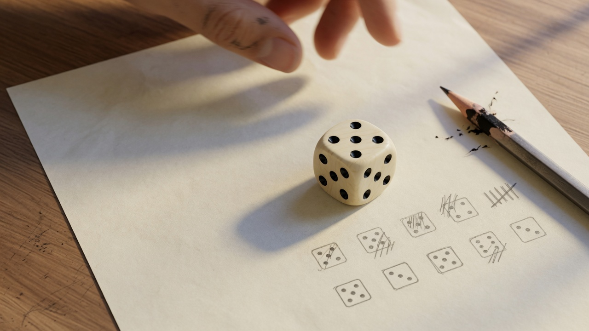
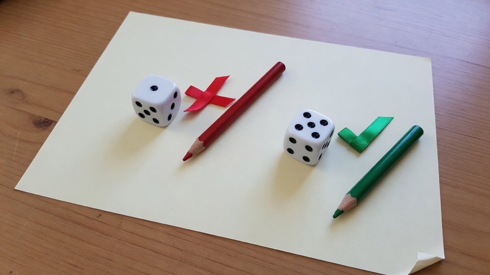
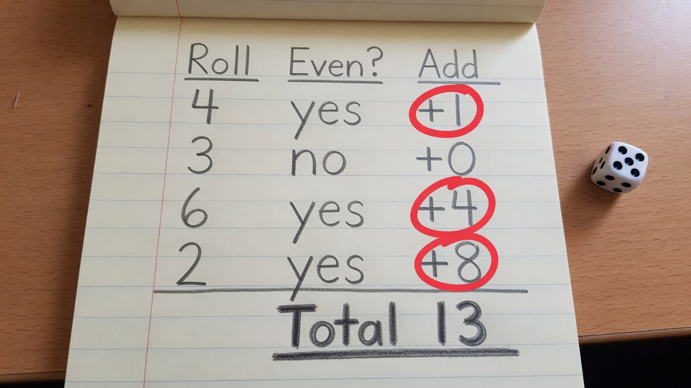
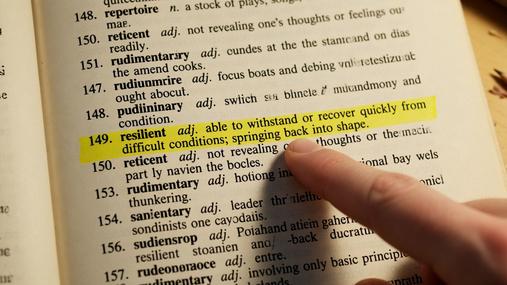

Your wallet’s secret is 12 words. Learn how one word comes from dice —
then how all twelve fit together.
A seed is 12 secret words
Anyone who has these words controls the bitcoin. Anyone who loses them
loses the bitcoin. No customer support. No reset button.
Words come from a fixed list of 2,048
Most people use 12 words
They must stay offline and private
What you’ll need
This tutorial teaches the dice → word method. You only need a screen
right now. For a real seed later:
DiceEven one fair d6 is enough
Pen & paperWrite rolls and words
Word listBIP-39 list (included here)
A home for the seedHardware wallet, or offline PC for word 12
At the end you’ll pick a path: paper, Coldcard, SeedSigner, or Jade.
How one seed word is made
Four steps — then you’ll do them on a worksheet.

1
Roll
One die, eleven times. Write down each face (1–6).

2
Even or odd?
Even = keep (counts). Odd = skip
(add zero).

3
Add the even rolls
Weights 1, 2, 4… 1024. Even → add that weight. Odd → +0. Sum is
your number.

4
Look up the word
Find that total on the BIP-39 word list. The word next to the number
is your seed word.
Practice · 1 of 11
Roll a die
Eleven rolls make one seed word. Start with roll 1.
You made one word
A Bitcoin seed needs 12 words. Here’s how they fit:
1–11Each one is made the way you just practiced (11 rolls → number → list)
12Not free choice — it’s a checksum derived from words 1–11
How you generate the full seed depends on your setup. Next you’ll see a
practice 12-word example, then real-world paths: paper, Coldcard,
SeedSigner, or Jade.
Demo only — do not fund this
Practice seed
A fake 12-word seed so you can see the shape. Treat it as garbage.
Generate once to continue
Do it for real
Never type a funded seed (or the rolls behind it) into this website.
Pick a path that fits your setup.
Paper + offline computer
Best if you don’t trust any hardware wallet’s RNG and want full
control. Works with any BIP-39 wallet afterward.
Print the BIP-39 English list (or use an offline copy). You practiced
looking words up on this site.
On paper, make words 1–11 with the worksheet method
(11 rolls each → odd/even → sum → list).
For word 12, use an air-gapped machine and
veebch/Bip39-Dice
(24thword.py) — or another offline BIP-39 tool. Never do
this on a normal online computer for a seed you’ll fund.
Pick one valid 12th word with more dice if the tool gives candidates.
Backup on metal or paper. Restore on a spare wallet and send a tiny
test amount before moving real funds.
The device turns your dice rolls into a full BIP-39 seed (including
the checksum word). You do not need a second computer
to create it. This is especially relevant for
Mk3 users after Coinkite’s seed-generation advisory.
Mk3 note
If you generated a seed with the Mk3’s own RNG on firmware 4.0.1+,
Coinkite warned funds may be at risk. A dice-only seed avoids that
RNG. Mk4 / Q / Mk5 are not affected by that advisory (per Coinkite’s
early analysis) but can still use dice rolls if you want.
Before you start
Use an empty Coldcard (or accept wiping the current seed).
Have fair six-sided dice and pen/paper for the backup.
Plan enough rolls:
≥50 for a 12-word seed,
≥99 for 24-word (Coinkite’s minimums). More is fine.
Do this in private — no cameras on the screen or dice.
Create the seed (usual menu)
Power on the Coldcard and unlock with your PIN.
Go to
New Seed Words → Advanced.
Choose
12 Word Dice Roll
or
24 Word Dice Roll.
Roll a physical die. On the Coldcard keypad, press the matching
number 1–6. Repeat until you meet the minimum (or
more). The device shows a running hash of your rolls.
When finished, the Coldcard derives the seed and shows the BIP-39
words. Write every word down carefully (metal or
paper).
Complete Coldcard’s backup confirmation (it will ask you to re-enter
words to prove the backup is correct).
Mk3 advisory path (dice-only import)
Coinkite also documents a dedicated path that hashes rolls directly and
does not use the device generator:
Empty Mk3, preferably on a supported firmware (see advisory).
Import Existing → Dice Rolls
Enter at least 99 independent rolls of a fair d6
(press 1–6 after each physical roll).
Write and confirm the backup as above.
After the seed exists
Export/watch-only to your coordinator if you use one.
Verify a receive address on the Coldcard screen.
Send a small test amount; confirm it arrives.
Only then move larger amounts.
Optional: verify the math
To check the Coldcard isn’t lying about dice→words, Coinkite publishes
verification tools. Only do this with test rolls, or on a
truly air-gapped machine — never paste funded rolls into an online PC.
SeedSigner is an air-gapped signing device (often DIY). It can turn
fair d6 rolls into a full BIP-39 seed, or help finish a paper seed
by calculating the last checksum word. Menu labels vary slightly by
firmware — look for New seed with a dice icon.
Before you start
SeedSigner offline (no Wi‑Fi dongle, camera covered when idle).
Fair six-sided dice and pen/paper (or metal) for the backup.
Plan rolls:
50 for a 12-word seed,
99 for 24-word (SeedSigner’s counts).
Remember: SeedSigner is usually stateless — the
seed lives in RAM until you power off. Write the words down before
you unplug.
Create a seed from dice
Power on SeedSigner.
Open
Seeds → Create a seed
(or Tools → New seed on older builds) and choose
the dice option.
Pick
12 words (50 rolls)
or
24 words (99 rolls).
Roll a physical die. On the SeedSigner screen, select
1–6 for each roll. Repeat until the count is done.
SeedSigner shows the BIP-39 words. Write every word
carefully, then confirm the backup if the device asks.
Export a watch-only wallet (QR) to your coordinator. Verify a receive
address on the SeedSigner screen before funding.
Paper method helper (checksum word)
If you made words 1–11 (or 1–23) on paper with the method in this
tutorial, SeedSigner can also compute the final checksum word from
those words — useful instead of an offline PC +
24thword.py.
After the seed exists
Keep the written backup private; SeedSigner will forget the seed when powered down.
Jade can build a BIP-39 mnemonic from physical dice so you don’t rely
only on the device RNG. Exact menu text can change with firmware;
look for Generate / mnemonic and a
dice option.
Before you start
Jade unlocked (PIN) and on current firmware if you can update safely.
Fair six-sided dice and a private place to write the backup.
Follow on-screen roll counts (Jade will ask for enough entropy for
12- or 24-word seeds).
Jade is often used with Blockstream Green as a
watch-only / coordinator app — plan that setup after the seed exists.
Create the seed with dice
Power on Jade and enter your PIN.
Choose to
generate a new mnemonic / recovery phrase
(wording varies by firmware).
Select the
dice
(or “use dice”) entropy option when offered — not only “device RNG”
if you want dice-sourced entropy.
Roll a physical die. Enter each face
1–6
on Jade. Continue until the device says you have enough rolls.
Jade shows the BIP-39 words.
Write every word down
(metal or paper). Confirm the backup on-device if prompted.
Pair or connect to Blockstream Green (or another supported
coordinator), export/watch-only as guided, and verify a receive
address on the Jade screen.
After the seed exists
Store the written backup offline and private.
Send a small test amount; confirm it on Jade.
Only then move larger amounts.
Note
Menu paths differ between Jade Classic, Jade Plus, and firmware
versions. If you don’t see a dice option, check Blockstream’s current
docs or update firmware from a trusted source before generating a
funded seed.
Method taught in this tutorial follows
veebch/Bip39-Dice
(paper calculator + checksum tools). Not affiliated with Coinkite /
COLDCARD, SeedSigner, or Blockstream / Jade.